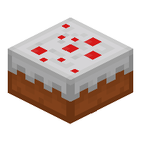

This is a breif recipie on how to bake a basic cake, i chose this because cake is a widley known and simple to make.
This is one of my favourite foods as it is delicous and comes in many varieties (ice cream cake, cheesecake, cupcake, carrot cake, etc...)
